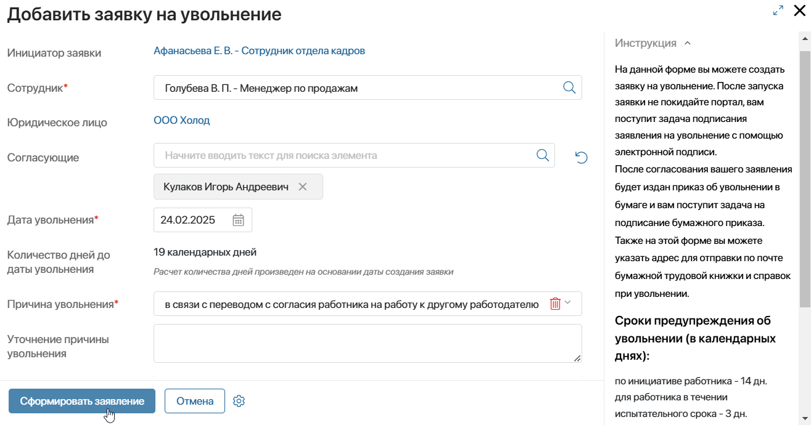
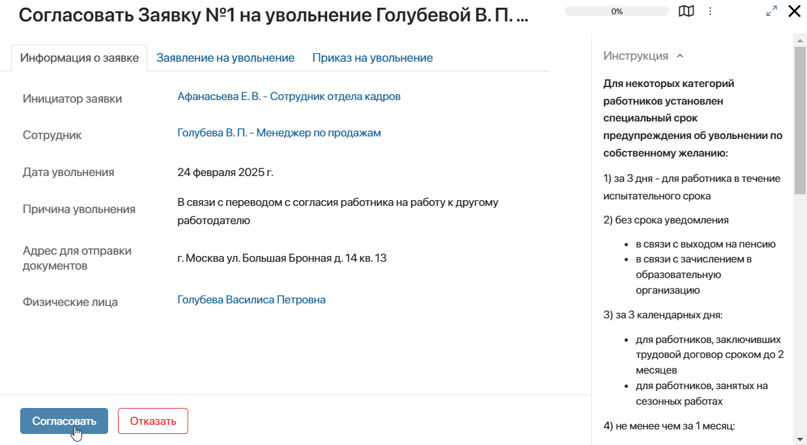
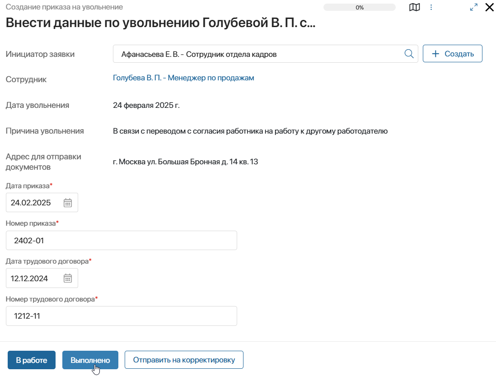
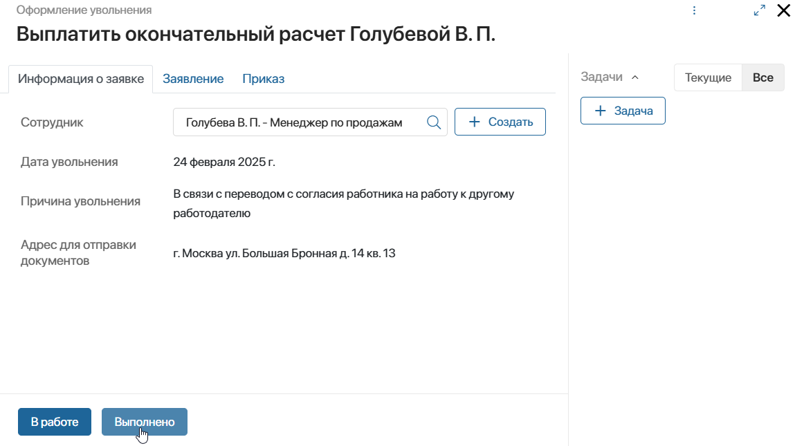

В ELMA365 КЭДО 3.0 предусмотрен процесс увольнения сотрудника из организации.
Согласно текущим требованиям законодательства издавать приказ об увольнении в электронном виде и подписывать его электронной подписью запрещено.
В рамках процесса увольнения, предусмотренного в ELMA365 КЭДО 3.0, реализована подача и подписание заявления об увольнении с помощью электронной подписи. Затем приказ издаётся в бумажном виде и подписывается сотрудником и работодателем.
Ход процесса увольнения
Процесс увольнения включает в себя следующие этапы:
- Создаётся заявка на увольнение:
- специалист отдела кадров может оформить увольнение для любого сотрудника, трудоустроенного в ту же организацию;
- руководитель подразделения по штатному расписанию запускает процесс увольнения для себя или любого своего подчинённого;
- другие сотрудники создают заявку на своё имя на портале КЭДО.
- Увольняемый сотрудник в рамках отдельных задач:
- указывает почтовый адрес, по которому ему отправляются оригинал трудовой книжки и оформленные документы по увольнению;
- подписывает заявление на увольнение электронной подписью.
- Руководитель увольняемого согласовывает увольнение.
- Специалист отдела кадров вносит данные для формирования приказа на увольнение.
- Увольняемый сотрудник подписывает бумажный экземпляр приказа на увольнение и загружает его отсканированную копию на портале КЭДО.
- Специалист отдела кадров проверяет отправленный экземпляр приказа на увольнение и получает подпись директора организации.
- Бухгалтер выполняет окончательный расчёт сотрудника и выплачивает заработную плату.
- При наступлении даты увольнения руководитель переназначает задачи с уволенного сотрудника на другого пользователя.
- Специалист отдела кадров передаёт уволенному сотруднику оригиналы необходимых документов.
По окончании процесса в карточке уволенного сотрудника отображается статус Уволен. Пользователь, созданный для данного сотрудника, блокируется.
Создание заявки на увольнение
Создать заявку на увольнение можно из раздела интерфейса ELMA365, а также на портале КЭДО. Подробнее читайте в статье «Подать заявление на увольнение с портала КЭДО».
В этой статье рассмотрим, как специалист отдела кадров запускает процесс увольнения из раздела КЭДО 3.0:
- Перейдите в раздел КЭДО 3.0 > Заявки на увольнение и в правом верхнем углу страницы нажмите + Заявка на увольнение.
- В открывшемся окне заполните необходимые данные:

- Инициатор заявки — в поле автоматически записывается сотрудник, создающий заявку;
- Сотрудник* — выберите сотрудника, для которого оформляется увольнение. Специалист отдела кадров может указать любого трудоустроенного в ту же организацию сотрудника, руководитель подразделения — своих подчинённых, остальные сотрудники создают заявку на своё имя;
- Согласующие* — в поле автоматически определяется руководитель увольняемого сотрудника по штатному расписанию организации. В ходе процесса он согласовывает заявку на увольнение. Если значение в поле не появилось, нажмите , чтобы найти руководителя повторно. Нажмите значок лупы, чтобы изменить или добавить согласующего. Если выбрано несколько сотрудников, согласовывать заявку будет каждый из них;
- Дата увольнения* — укажите дату согласно допустимым срокам предупреждения сотрудника об увольнении. Обратите внимание, нельзя уволить сотрудника прошедшим числом, в поле выбирается дата не ранее текущей;
- Количество дней до даты увольнения — рассчитывается автоматически от текущей даты до указанной даты увольнения;
- Причина увольнения* — доступные причины различаются в зависимости от сотрудника, на которого оформляется увольнение:
- заявка создаётся на своё имя — по собственному желанию, по соглашению сторон, отпуск с последующим увольнением, в связи с выходом на пенсию, в связи с зачислением в образовательную организацию, в связи с переводом по просьбе работника на работу к другому работодателю;
- заявка оформляется на другого сотрудника — в связи с переводом с согласия работника на работу к другому работодателю, по соглашению сторон.
- Уточнение причины увольнения — необязательное поле, здесь можно дополнить причину увольнения.
- Нажмите Сформировать заявление.
Элемент сохранится в приложении Заявки на увольнения, в котором сотрудник отдела кадров сможет отслеживать текущий статус заявки.
Внесение почтового адреса и подписание заявления увольняемым
После того как заявка создана и процесс запущен, увольняемый сотрудник в портале КЭДО выполняет следующие задачи:
- Ознакомиться с заявкой на увольнение и указать адрес для отправки оригинала трудовой книжки и документов на увольнение.
- Подписать заявление на увольнение сертификатом электронной подписи.
Перед отправкой заявления сотруднику на подписание в процессе определяются: руководитель, бухгалтер и подписант от организации по штатному расписанию. Если по заявке не удалось установить данных пользователей, администратор системы в рамках отдельной задачи указывает сотрудников на эти роли вручную.
Сформированные заявления сотрудников хранятся в разделе КЭДО 3.0 > Заявления на увольнение. В справочнике специалист отдела кадров может отслеживать статус заявки.
Согласование увольнения руководителем
После подписания заявления на увольнение, руководитель увольняемого сотрудника по штатному расписанию получает задачу ознакомиться с заявлением и согласовать увольнение.

Если руководитель запустил процесс увольнения на своё имя, данный этап пропускается.
Формирование приказа на увольнение
После согласования с руководителем заявка отправляется сотруднику отдела кадров для формирования приказа на увольнение. Задача внести номер и дату приказа поступает всем специалистам организации.
Ответственный пользователь может взять задачу в работу, выполнить её или отправить заявку на увольнение на корректировку.

Сформированные приказы можно просмотреть в разделе КЭДО 3.0 > Приказы на увольнение. Статус элемента отображает этап подписания приказа.
Подписание бумажного экземпляра приказа
На следующем этапе увольняемому сотруднику на Портал КЭДО отправляется сформированный приказ на увольнение. Он распечатывает его, подписывает и загружает отсканированную копию в задаче на портале.
На всех специалистов отдела кадров назначается задача проверить подписанный экземпляр приказа. Ответственный сотрудник может:
- выполнить задачу, если отправлен корректный документ;
- отправить приказ на подписание повторно;
- отказать в дальнейшем оформлении заявки. Тогда инициатору поступит задача скорректировать данные в заявлении. Он сможет повторно отправить заявку по маршруту её обработки.
Затем специалист отдела кадров передаёт приказ на подписание генеральному директору организации.
Произвести окончательный расчет сотрудника
После подписания приказа с обеих сторон бухгалтер организации выполняет окончательный расчёт сотрудника и выплачивает ему заработную плату.
На форме задачи в отдельных вкладках бухгалтер может ознакомиться с общей информацией по заявке на увольнение, просмотреть сформированные заявление и приказ.

Переназначение задач с уволенного сотрудника
При наступлении даты увольнения руководителю сотрудника приходит задача повторно ознакомиться с заявкой на увольнение.
Также руководитель переходит в раздел Задачи > Мой отдел и переназначает задачи увольняемого сотрудника на другого пользователя.
После этого он может выполнить свою задачу ознакомления.
Передача сотруднику необходимых документов
Пока руководитель выполняет задачу ознакомления, отдел кадров отправляет или передаёт сотруднику оригиналы документов: трудовую книжку, заявление и приказ на увольнение и т. д.
После передачи документов, специалист отдела кадров может закрыть задачу, и процесс увольнения завершается.
Уволенный пользователь блокируется в системе ELMA365. В карточке сотрудника появляется статус Уволен.